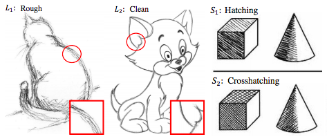
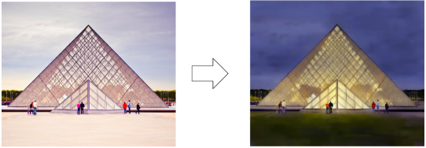
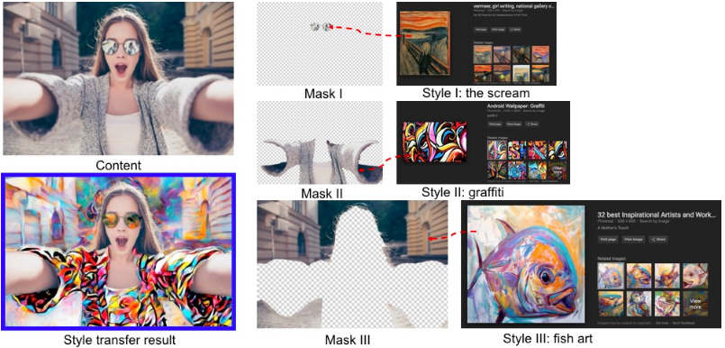
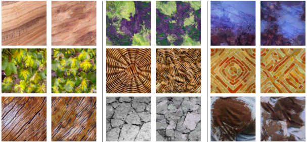
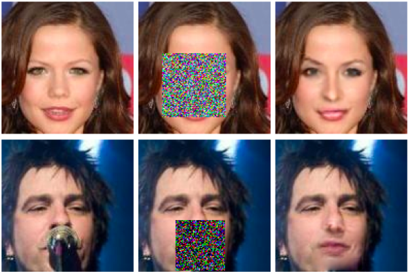
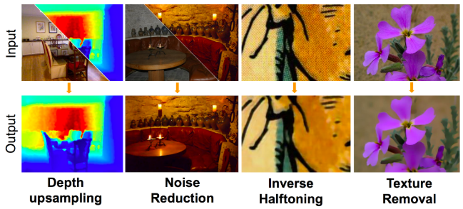

Joint Image Filtering with Deep Convolutional Networks
Joint Image Filtering with Deep Convolutional Networks
Yijun Li, Jia-Bin Huang, Narendra Ahuja, and Ming-Hsuan Yang
IEEE Transactions on Pattern Analysis and Machine Intelligence (TPAMI), 2018
Paper Code
【HOME】
 Im2Pencil: Controllable Pencil Illustration from Photographs
Yijun Li, Chen Fang, Aaron Hertzmann, Eli Shechtman, and Ming-Hsuan Yang
IEEE Conference on Computer Vision and Pattern Recognition (CVPR), 2019
Paper Code
Joint Image Filtering with Deep Convolutional Networks
Yijun Li, Jia-Bin Huang, Narendra Ahuja, and Ming-Hsuan Yang
IEEE Transactions on Pattern Analysis and Machine Intelligence (TPAMI), 2018
Paper Code
 A Closed-form Solution to Photorealistic Image Stylization
Yijun Li, Ming-Yu Liu, Xueting Li, Ming-Hsuan Yang, and Jan Kautz
European Conference on Computer Vision (ECCV), 2018
Paper Code
 Flow-Grounded Spatial-Temporal Video Prediction from Still Images
Flow-Grounded Spatial-Temporal Video Prediction from Still Images
Yijun Li, Chen Fang, Jimei Yang, Zhaowen Wang, Xin Lu, and Ming-Hsuan Yang
European Conference on Computer Vision (ECCV), 2018
Paper Code
 Universal Style Transfer via Feature Transforms
Yijun Li, Chen Fang, Jimei Yang, Zhaowen Wang, Xin Lu, and Ming-Hsuan Yang
Advances in Neural Information Processing Systems (NIPS), 2017
Paper Code Two Minute Papers
 Diversified Texture Synthesis with Feed-forward Networks
Spotlight
Yijun Li, Chen Fang, Jimei Yang, Zhaowen Wang, Xin Lu, and Ming-Hsuan Yang
IEEE Conference on Computer Vision and Pattern Recognition (CVPR), 2017
Paper Code
 Generative Face Completion
Yijun Li, Sifei Liu, Jimei Yang, and Ming-Hsuan Yang
IEEE Conference on Computer Vision and Pattern Recognition (CVPR), 2017
Paper Code Project
 Deep Joint Image Filtering
Yijun Li, Jia-Bin Huang, Narendra Ahuja, and Ming-Hsuan Yang
European Conference on Computer Vision (ECCV), 2016
Paper Code Project